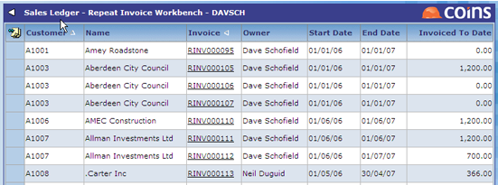
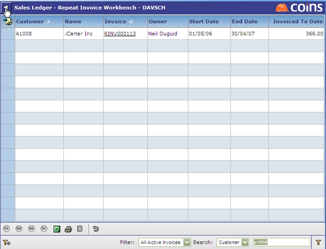
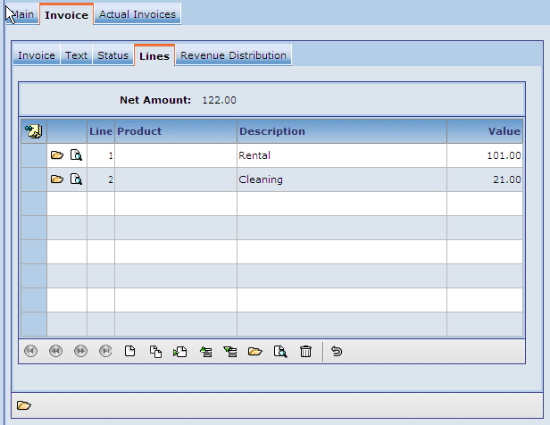
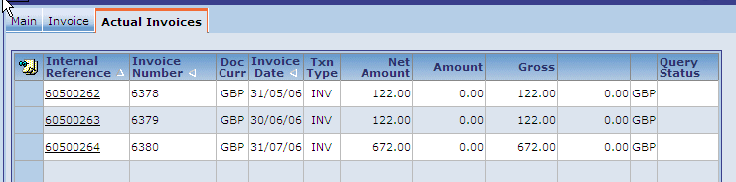

The Repeat Invoice Workbench helps you work with repeat or recurring invoices.

The Repeat Invoice Workbench includes filtering, with both simple and advanced filters.

With the Repeat Invoice Workbench, you can easily look at and edit EXISTING repeat invoices (not add new ones).

It also lets you look at invoicing to date.
